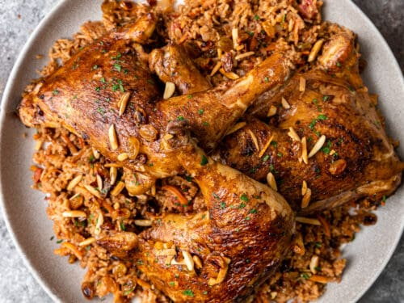

Odin Recipes - Kabsa
back to index
Prep Time: 40 mins Cook Time: 1 hrs 30 mins Total Time: 2 hrs 10 mins
Servings: 8
Ingredients
Kabsa Spice Mix:
-
½ teaspoon saffron
-
½ teaspoon ground cinnamon
-
½ teaspoon ground allspice
-
½ teaspoon dried whole lime powder
-
¼ teaspoon ground cardamom
-
¼ teaspoon ground white pepper
Kabsa Dish:
-
¼ cup butter
-
1 onion, finely chopped
-
6 cloves garlic, minced
-
1 (3 pound) whole chicken, cut into 8 pieces
-
¼ cup tomato puree
-
1 (14.5 ounce) can diced tomatoes, undrained
-
3 carrots, peeled and grated
-
2 whole cloves
-
1 pinch ground nutmeg
-
1 pinch ground cumin
-
1 pinch ground coriander
-
salt and freshly ground black pepper to taste
-
3 ¼ cups hot water, plus more if needed
-
1 cube chicken bouillon/p>
-
2 ¼ cups unrinsed basmati rice
-
¼ cup raisins
-
¼ cup toasted slivered almonds
Directions:
Step 1
Make spice mix: Stir together saffron, cinnamon, allspice, lime powder, cardamom, and white pepper in a small bowl; set aside.
Step 2
Make dish: Melt butter in a large stockpot or Dutch oven over medium heat. Cook and stir onion and garlic in butter until onion has softened and turned translucent, about 5 minutes. Add chicken and cook over medium-high heat, stirring occasionally, until lightly browned, about 10 minutes. Mix in tomato purée.
Step 3
Stir in canned tomatoes with juice, carrots, cloves, nutmeg, cumin, coriander, salt, black pepper, and reserved spice mix. Cook for about 3 minutes; pour in water and add chicken bouillon cube
Step 4
Bring sauce to a boil, then reduce heat, and cover the pot. Simmer until chicken is no longer pink and the juices run clear, about 30 minutes.
Step 5
Gently stir in rice. Cover the pot and simmer until rice is tender and almost dry, about 25 minutes; add raisins and a little more hot water, if necessary. Cover and cook until rice grains separate, 5 to 10 minutes.
Step 6
Transfer rice to a large serving platter and arrange chicken on top. Sprinkle with toasted slivered almonds.
Tips
Don't rinse or soak the rice before using it. Depending on the type of rice you use, you may need to use more or less water. Stay on the low side to avoid the dish being too mushy — you can always add more.